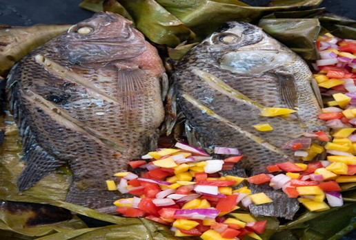

Pinaputok na Tilapia
What is Pinaputok na Tilapia?
Pinaputok na tilapia is the ultimate seafood dish! Stuffed with tomatoes and onions and baked to perfection, this Filipino-style fish is easy to make, tasty, and budget-friendly. Delicious with steamed rice!
Ingredients
2 pieces tilapia cleaned and scales removed
3/4 cup green mango diced
1 piece tomato diced
1 piece onion chopped
1 teaspoon ginger minced
1 tablespoon lemon juice
2 teaspoons cooking oil
Salt and pepper to taste
Instructions / How to Cook
1. Make about 2 to 3 slits on each side of the tilapia deep enough to reach the bones.
2. Rub about 1 teaspoon of salt per side. Let the fish absorb the flavor for about 15 minutes.
3. Combine the tomato, onion, mango, ginger, lemon juice, salt, and ground black pepper in a medium bowl. Mix well.
4. Scoop the tomato and onion mixture and stuff inside the cavity of the tilapia. Try to stuff all the mixture, if possible. Note that the tilapia should have a cut under the body due to removal of the innards.
5. Wrap the tilapia in an aluminum foil. Make sure that everything is covered.
6. Preheat oven to 370 degrees Fahrenheit.
7. Bake the tilapia for 20 minutes. (or grill each side of the fish for 10 minutes).
8. Remove the tilapia from the oven and then open the top so that the fish is exposed. Brush the cooking oil over the fish.
9. Change the settings of the oven to broil (about 510 degrees Fahrenheit). Put the fish back-in with the exposed top. Broil for 15 minutes.
10. Remove the fish from the oven and serve with toyomansi.